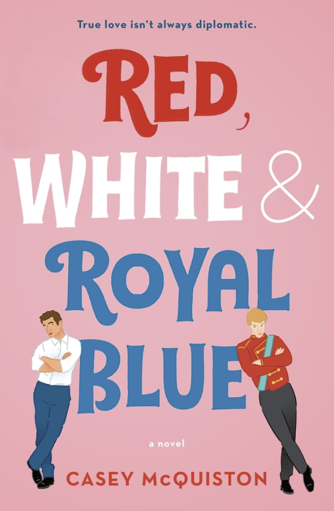
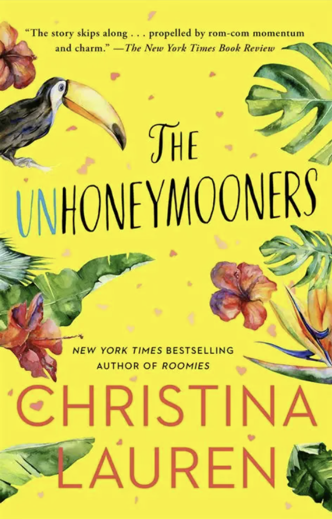
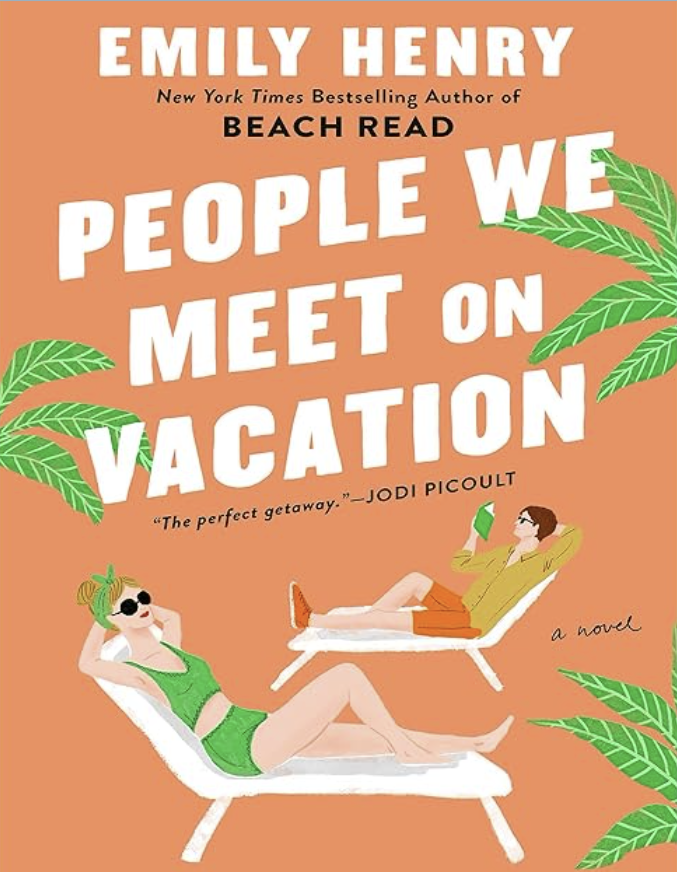
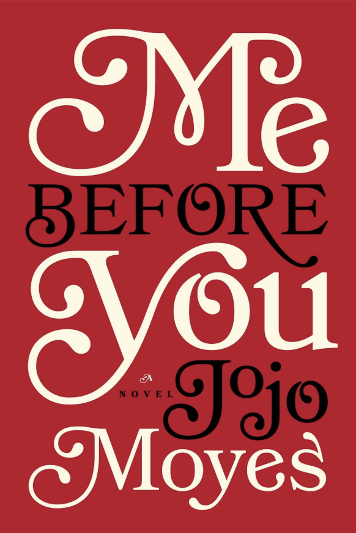
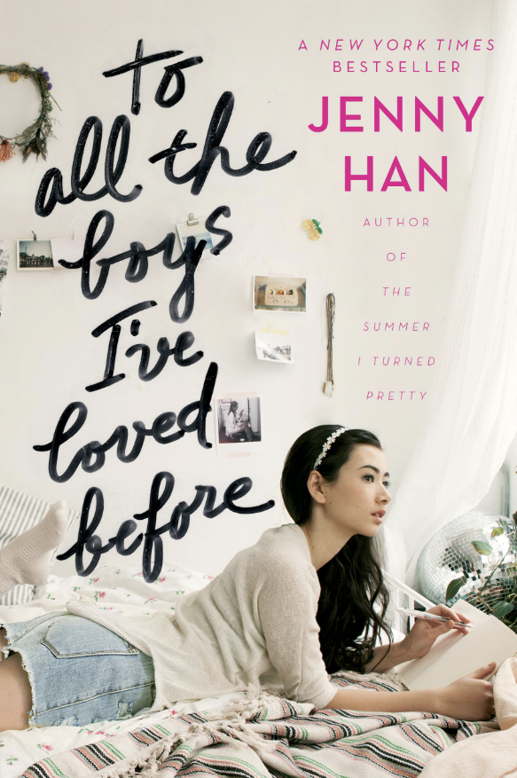
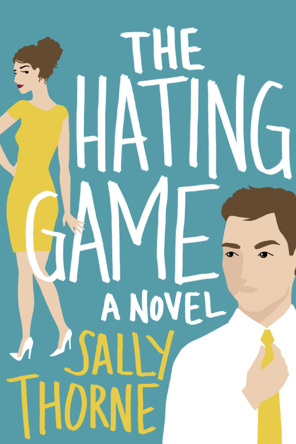
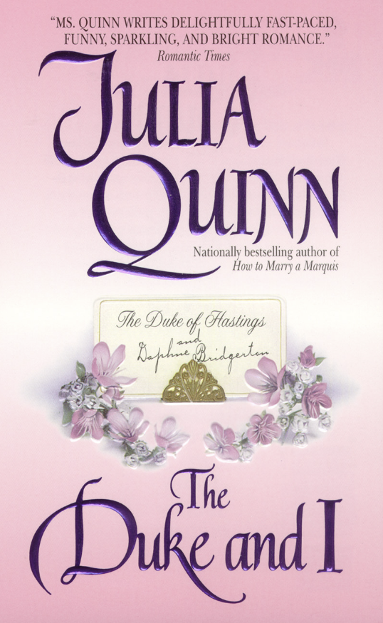
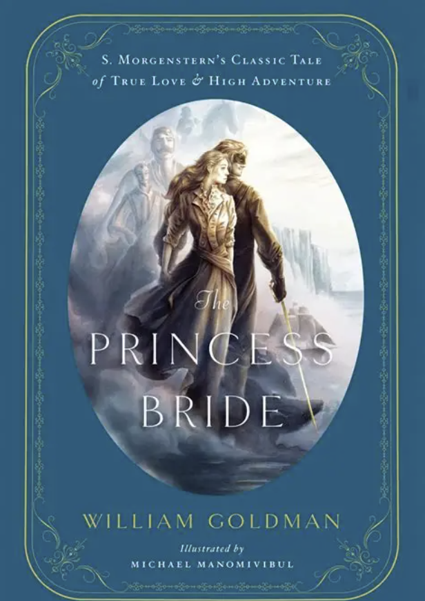
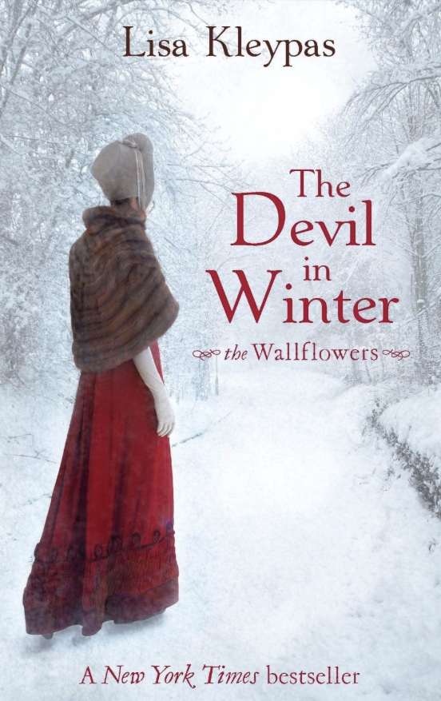

Fall in Love: Romance
Welcome to the ultimate comfort read destination. The defining rule of the romance genre is that it must end with a Happily Ever After (or at least a Happily For Now). In a world that can often feel chaotic and stressful, there is something profoundly soothing about picking up a book and knowing that, no matter what obstacles the characters face, everything is going to work out in the end.
But romance is about so much more than just the ending—it is about the journey. These stories dive deep into human connection, vulnerability, and personal growth. They explore how people lower their walls, overcome their past traumas, and learn to truly partner with another person. It is an incredibly character -driven genre that puts emotional development front and center.
Whether you want to swoon over a Duke in a sprawling English ballroom, laugh out loud at hilarious modern dating mishaps, or find comfort in a grounded, emotional love story, there is a romance book out there for you. I have broken down my absolute favorites into three distinct subgenres below. Let's find your next great love story!
Romantic Comedies
Romantic comedies are the perfect antidote to a bad day. These books are designed to make you laugh out loud, featuring quirky setups, hilarious misunderstandings, and dialogue that crackles with electricity. They take the classic tropes we all know and love such as fake dating, enemies-to-lovers, or forced proximity. And these are executed with incredible humor and heart.
While the focus is definitely on the comedy, the romance in these books is never shortchanged. In fact, humor is often the very thing that brings the couple together, proving that finding someone who matches your exact level of weirdness is the ultimate romantic victory. These stories are light, joyful, and completely addictive.

Red, White & Royal Blue
When the First Son of the United States and the Prince of Wales cause an international incident by tumbling into a wedding cake, they are forced to stage a fake friendship for the cameras. What starts as a PR nightmare slowly evolves into a secret, high-stakes romance that could change the course of history. It is hilarious, deeply optimistic, and incredibly heartwarming.
Get the Book
The Unhoneymooners
Olive is forced to take her twin sister's place on an all-expenses-paid honeymoon to Hawaii alongside her sworn enemy, Ethan. To avoid ruining the trip, they have to pretend to be a blissfully married couple in front of everyone they meet. It is a laugh-out-loud, perfectly executed enemies-to-lovers story with an incredible tropical setting.
Get the Book
People We Meet on Vacation
If you love the slow, agonizing build of best-friends-to-lovers, this book captures that dynamic perfectly. Poppy and Alex have nothing in common, but for a decade, they took one glorious summer vacation together until a mysterious falling out ruined everything. Now, Poppy has convinced him to take one last trip to fix their fractured relationship, leading to plenty of hilarious and heartwarming travel mishaps.
Get the BookContemporary Romance
Set in the present day, contemporary romance tackles the very real, relatable struggles of modern life and dating. These books feel grounded in reality, often featuring characters navigating career changes, messy family dynamics, and the complexities of finding love in today's world. It is the perfect subgenre if you want to read about characters who feel like they could be your actual friends.
The beauty of contemporary romance is its incredible variety. You can find everything from emotionally devastating stories that will make you weep, to sweet, small-town romances that feel like a warm hug. It is a brilliant reflection of modern relationships, proving that extraordinary love stories can happen to perfectly ordinary people in coffee shops, office cubicles, and crowded cities.

Me Before You
Louisa Clark takes a job as a caregiver for Will Traynor, a wealthy, adventurous man who was paralyzed in an accident and has lost his will to live. As she sets out to show him that life is still worth living, they form a profoundly deep and unexpected connection. This is a beautifully written, emotionally devastating love story that will stay with you long after the final page.
Get the Book
To All the Boy's I've Loved Before
Lara Jean keeps secret love letters to all her crushes in a hatbox, but her life is turned upside down when they are mysteriously mailed out to the boys. To save face, she enters into a fake dating arrangement with one of the recipients, the incredibly popular Peter Kavinsky. It is a sweet, deeply charming, and nostalgic coming-of-age romance that will absolutely melt your heart.
Get the Book
The Hating Game
If you love fierce workplace rivalries and witty banter, this is the ultimate enemies-to-lovers blueprint. Lucy and Joshua are executive assistants who share an office and absolutely despise each other, engaging in petty daily games of one-upmanship. But when they are up for the same promotion, their intense rivalry begins to spark into something completely unexpected.
Get the BookHistorical Romance
Historical romance transports you to another era, complete with sweeping ballgowns, strict societal rules, and incredibly high stakes. While many of these stories are set in Regency or Victorian England, the subgenre spans all of human history. The fun of historical romance lies in watching characters navigate (and often rebel against) the rigid expectations of their time period.
Because there were so many rules around propriety and courtship in the past, authors can build immense tension out of the smallest actions. A lingering glance across a crowded ballroom, the scandalous removal of a glove, or a stolen moment in a garden maze can carry as much emotional weight as a massive declaration of love. It is pure, indulgent escapism at its finest.

The Duke and I
The beloved book that inspired the massive Bridgerton television series is a modern classic of the historical genre. Daphne Bridgerton and the aloof Duke of Hastings agree to a fake courtship to keep society mothers at bay, but their ruse soon blurs the lines of reality. It is a sparkling, witty, and deeply romantic look at London's high society.
Get the Book
The Princess Bride
This classic tale of true love, high adventure, and fencing is an absolute masterpiece. When the beautiful Buttercup is betrothed to the evil Prince Humperdinck, her childhood love Westley must battle giant rats, brilliant swordsmen, and a rhyming giant to save her. It is hilarious, incredibly clever, and features one of the most iconic romances in literary history.
Get the Book
Devil in Winter
If you love watching a notorious rake completely change his ways for the right person, this is required reading. Desperate to escape her abusive relatives, a shy heiress makes a shocking proposition to London's most infamous scoundrel: marry her, and he gets her massive fortune. Their journey from a marriage of convenience to a devoted partnership is legendary among romance readers.
Get the Book